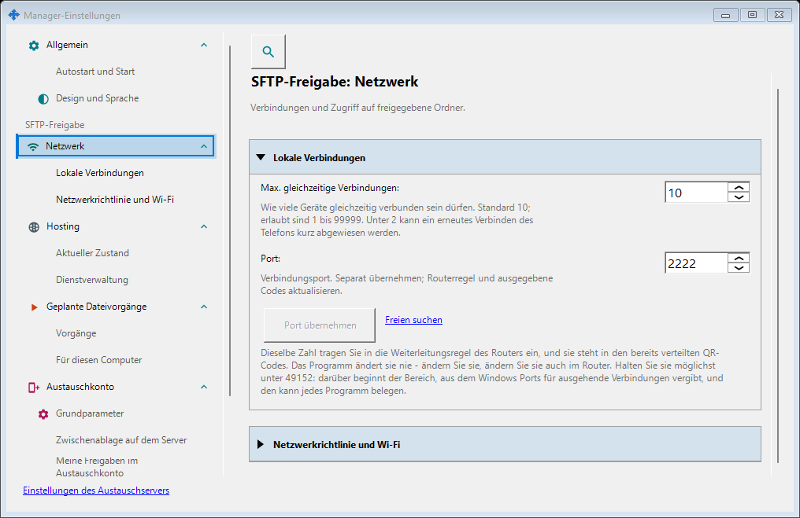
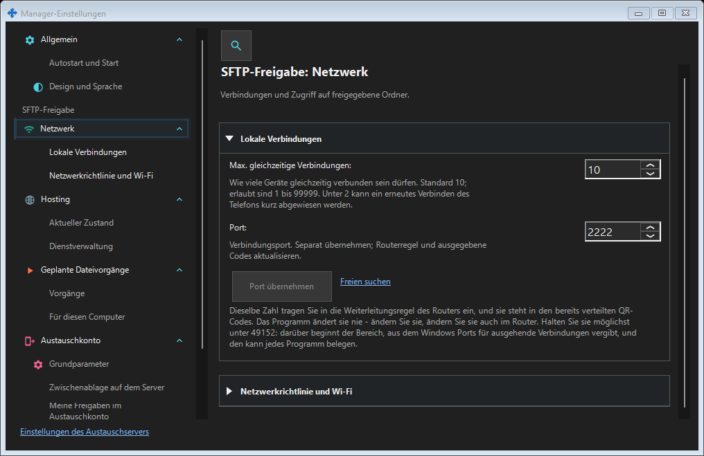

SFTP-Freigabeeinstellungen
Verwendungszweck
SFTP: Port, Verbindungslimit, LAN-Richtlinie und Betrieb als Windows-Dienst. Austauschserver: Adresse, TLS, Konten, Geräte, Einladungen, Dienst, Protokolle und Fernverwaltung.


In dieser Reihenfolge
Der SFTP-Port wird erst mit Anwenden übernommen. Ein Fensterwechsel behält den Entwurf. Beim Schließen: Ja anwenden, Nein verwerfen, Abbrechen weiter bearbeiten. Fehler behalten den Entwurf. Nach Portänderungen Codes und Routerregel erneuern.
Die Elemente
SFTP-Freigabeeinstellungen
SFTP: Port, Verbindungslimit, LAN-Richtlinie und Betrieb als Windows-Dienst. Austauschserver: Adresse, TLS, Konten, Geräte, Einladungen, Dienst, Protokolle und Fernverwaltung. Der SFTP-Port wird erst mit Anwenden übernommen. Ein Fensterwechsel behält den Entwurf. Beim Schließen: Ja anwenden, Nein verwerfen, Abbrechen weiter bearbeiten. Fehler behalten den Entwurf. Nach Portänderungen Codes und Routerregel erneuern.
SFTP-Freigabeeinstellungen
SFTP: Port, Verbindungslimit, LAN-Richtlinie und Betrieb als Windows-Dienst. Austauschserver: Adresse, TLS, Konten, Geräte, Einladungen, Dienst, Protokolle und Fernverwaltung. Der SFTP-Port wird erst mit Anwenden übernommen. Ein Fensterwechsel behält den Entwurf. Beim Schließen: Ja anwenden, Nein verwerfen, Abbrechen weiter bearbeiten. Fehler behalten den Entwurf. Nach Portänderungen Codes und Routerregel erneuern.
Managereinstellungen · SFTP-Freigabeeinstellungen · Einstellungen des Austauschservers